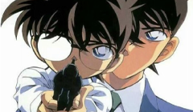
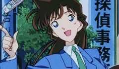
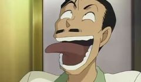
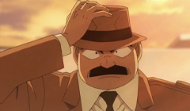

Toggle navigation
名侦探柯南
网站首页
(current)
剧情简介
动画制作
主要角色
经典案件
搜索
登录
注册
在线留言
Previous
Next

江户川柯南/工藤新一
江户川柯南，真实身份是高中生侦探工藤新一，人称“平成 年代的福尔摩斯”〝日本警察的救世主”。因跟踪黑衣组织成员可疑交易被装击，并被灌下代号 “APTX4869”的毒药，身 体因此缩小为一年级小学生 模样。为了保护身边人的安全，在被青梅竹马兼同学 的毛利兰询问自己名字时， 情急之下化名为江户川柯 南。目前寄住于小兰的父亲毛 利小五郎家中，解决各种 案件的同时秘密调查神秘的黑 衣组织。

毛利兰
毛利兰，就读于 帝丹高中己年级子班，是帝丹高中空手道部的主将， 曾经在全国高中空手道关东大赛中获得冠军。 现居住在毛利侦探事务所，负责家里的家务工作。 喜欢猫，狗，海豚等可爱的动物，怕鬼。方向感很差， 是个路痴，独自一个人行动时经常迷路。 父亲是私家侦探毛利小五郎，母亲是律政 界艾王妃英理，男朋友是高中生侦探工藤 新一，好国蜜为铃木集团的千金铃木园子，像大姐姐一样照顾寄住在自己家的江户川 柯南。虽然曾好几次怀疑柯南的真实身 份，但还不知道柯南的真实身份就是工 藤新一。在纽约时曾救过黑衣组织成员 苦艾酒，后被苦艾酒称为“天使”。

毛利小五郎
毛利小五郎，曾就读于帝丹小学、帝丹高中、米花大 学、以及警视厅警察学校。擅长柔道，怕高，好色、邋過、有些自以为是。 原就职于警视厅火灾二课及搜查一课，因某起案 件，于一年前辞职并改行成为私家侦探。毛利兰的父亲，与妻子妃英理分居，平时和 女儿住在一起，后来江户川柯南寄居在他 家中，三人便开始一起生活。小五郎原本是个 糊涂大侦探，但在柯南到来后，因为经 常在破亲时被柯南用手表型麻醉枪麻 醉并被借用其声音推理出真相，逐渐在侦探界、警界以“沉睡的小五郎” 闻名。
灰原哀/宫野志保
灰原哀， 《名侦探柯南》 角色，原名宫野志保，有着天才的大脑、丰富的科学知识和沉着冷静的个性，在冷漠、傲娇的外表下有着一颗善良、正义的心。未记 事起她就被送到美国留学，曾是黑衣组织的科学家，代号"雪 莉 (Sherry) 在组织中继承父母工作，研制出 "APTX4869” 。因相依为命的姐姐被组织暗杀，服药缩小后逃离组织，外表大约为7 岁，寄住在阿笠博士家，如今的身份是小学生、少年 侦探团成员。
阿笠博士
阿笠博士，自称 “天才发明家”，热衷于科学实验。与工藤新- 家是邻居，未婚。在新一被变小后，他让变小后的 新一奇宿在毛利小五郎家中，并且发明了许多设备 帮助新一破案，是新一最信任的理解者、协助者。 在新一追查黑衣组织的过程中，阿笠博士一直是 新一追查组织的得力助手和坚强后盾。阿笠博士 也是知道柯南真实身份的少数人物之一 现与灰原哀住在一起，在灰原哀逃离 组织之后保护着她。

目暮十三
目暮十三，又被称为“目暮警官”，职业是刑警，隶属警视厅刑事部搜杳第一课暴力犯罪搜查 三系，警衔为警部，是高木涉、佐藤美和子、千叶和伸等人的上司，也是 毛利小五郎当刑警时的上司。他 几乎每次出场时都穿着一身橘黄色的衣服，性格刚正不阿，富有责任心，不 擅长英文、唱歌、枪法，对于电子产品几乎是一窍不通。